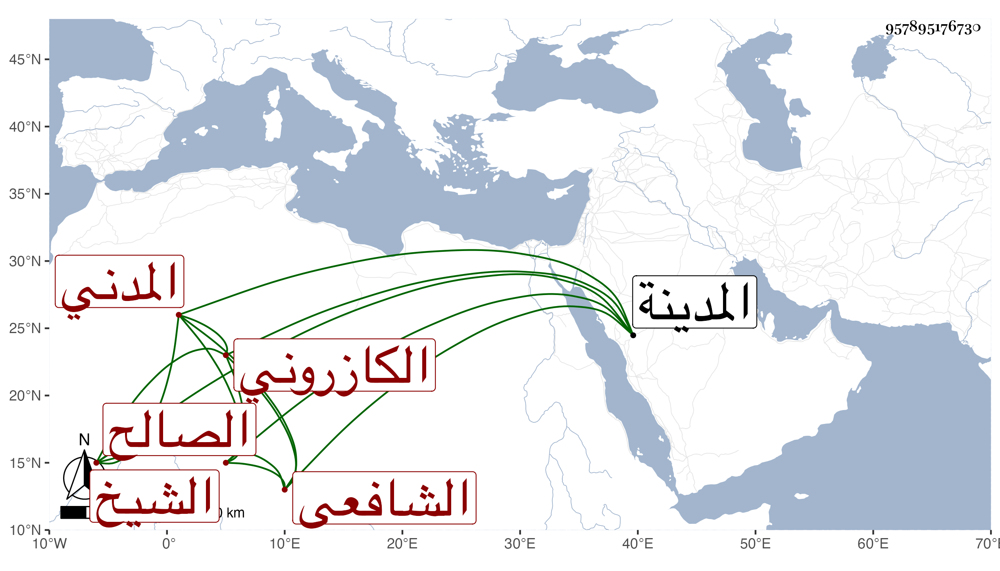

0902Sakhawi.DawLamic.ITO20230111-ara1.EIS1600.957895176730
Biography ID: 957895176730
192
عبد الرحمن بن أبي البركات بن أبي الهدى محمد بن تقي الدين الشيخ الصالح الزين الكازروني المدني الشافعي عم عبد الله بن عبد الوهاب بن أبي البركات الآتي . ممن قرأ علي بالمدينة في شرح النخبة وسمع أشياء وله أخذ عن الأبشيطي وغيره وفيه فضل ما مع سكون وخير . مات سنة إحدى وتسعين .
